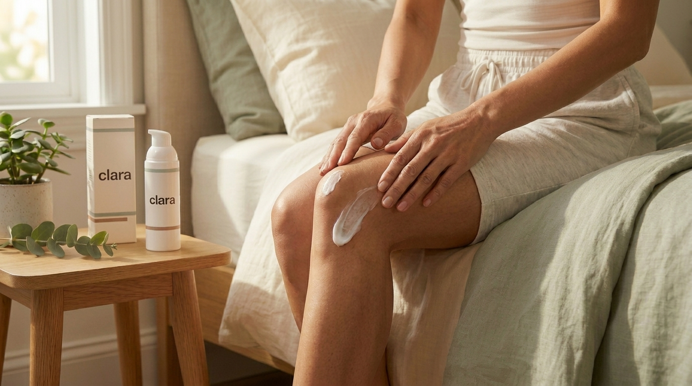
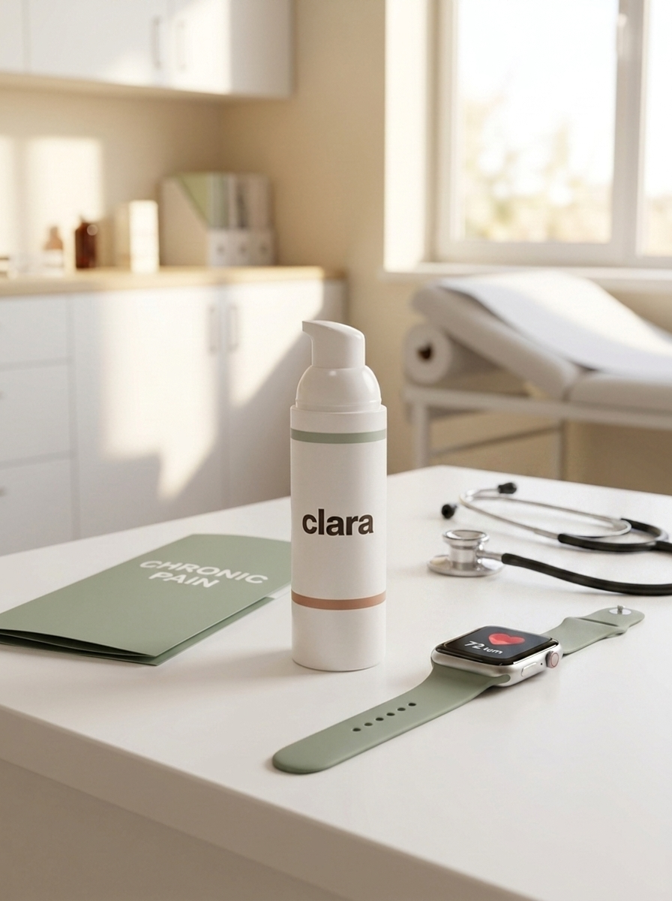
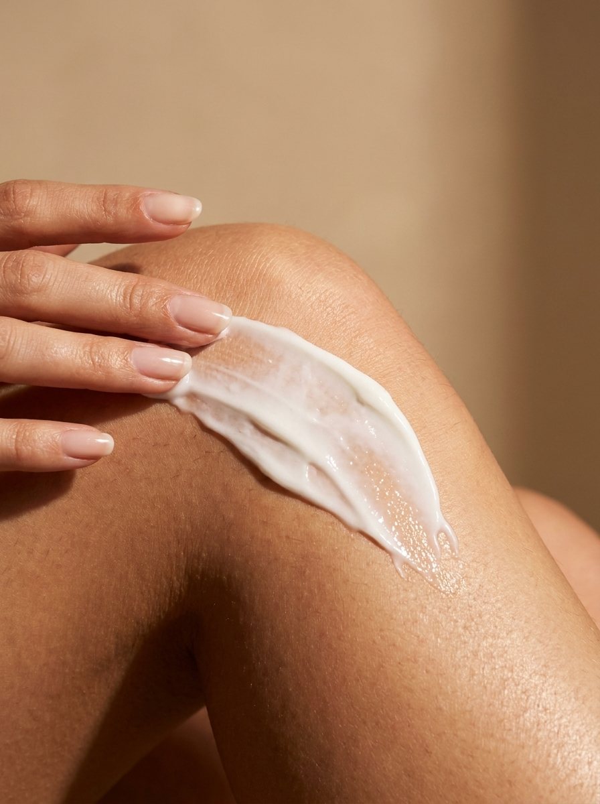
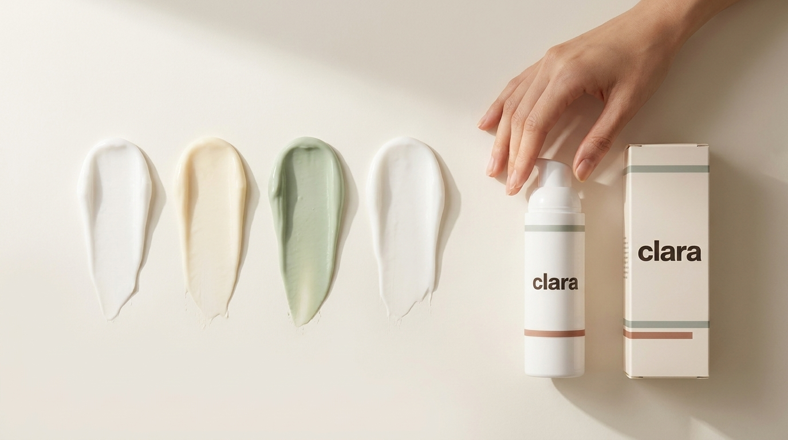

Why a compound cream? Relief, right where it hurts

Relief applied right where the pain lives, in the comfort of home.
Your movement plan does the heavy lifting. A compound cream is the teammate that makes the work more comfortable, without asking the rest of your body to come along.
Everything you have read above, the walking, the strengthening, the tai chi, the weight work, is the foundation of treating knee osteoarthritis. Nothing on this page replaces it. But on the days your knee complains, pain itself becomes the obstacle: it is hard to keep walking when walking hurts. That is exactly where a topical compound cream earns its place: it eases the pain enough to keep you moving, and the moving is what gets you better.
What is a compound cream?

A compound cream is prepared by a pharmacy to your doctor’s exact specification, combining several medicines into one cream that is delivered through the skin, directly over the painful joint. Your knee sits close to the surface, which makes it an ideal joint to treat this way: the medicine concentrates where the pain lives instead of travelling through your whole body first.
What makes a compound cream different from a single drugstore gel is that a knee does not hurt in just one way, so it is not treated with just one ingredient. The cream blends a few different kinds of medicine, each aimed at a different source of your pain.
Why a cream instead of a pill?

It goes only where it is needed
A pill has to pass through your stomach and bloodstream to reach one knee. A topical anti-inflammatory is absorbed through the skin at the joint itself; studies measuring blood levels found 5 to 17 times less medicine circulating in the body compared with the same drug taken by mouth(1, 2).
Comparable relief at the knee
For knee osteoarthritis, topical anti-inflammatories deliver pain relief comparable to oral versions of the same medicines(3). In pooled trials, 6 in 10 people using a topical anti-inflammatory achieved at least half their pain gone, versus 5 in 10 with a placebo cream(4).


Far fewer body-wide risks
Oral anti-inflammatories, taken regularly, carry real risks for the stomach, kidneys, heart, and blood pressure, especially over months and years(5, 6). Because so little of a topical reaches the bloodstream, the risk of those problems is much lower(1, 3). That is why major guidelines recommend trying a topical anti-inflammatory before, or instead of, pills for knee osteoarthritis(7, 8).
It plays well with the rest of your plan
The cream does not interact with your exercises, your walking program, or your weight plan; it supports them. Less pain means more steps, more sessions completed, more strength built. Think of it as one more teammate, not a replacement for the team.

What is inside, and why
Remember from Understanding Your Knee Osteoarthritis that the cartilage itself has no nerves: your pain actually comes from the parts that do, the bone beneath the cartilage, the inflamed joint lining, and the muscles and tissues around the knee. And when pain has been around a while, the surrounding nerves themselves can become more sensitive and fire too easily. A knee that hurts in several ways is best calmed in several ways, and that is exactly how the cream is built. Each group below targets a different one of those pain sources. Here is what is in it, and what each part is doing.
Anti-inflammatories: the workhorse
Ingredients like ketoprofen and diclofenac are the same family as ibuprofen, working right at the joint to calm the inflammation that drives most osteoarthritis pain. This is the anchor of the cream and the part with the strongest evidence: topical anti-inflammatories give relief comparable to the pills for knee OA(3, 4).
Numbing agents: quiet the signal
Lidocaine (and a small amount of long-acting bupivacaine) are local anaesthetics, the same idea as the numbing your dentist uses. They gently turn down the pain signals travelling along the nerves right under the skin at your knee, so the joint simply sends fewer “ouch” messages(9).
Nerve-calming medicines: for the sensitized knee
This is where the cream meets that sensitized-nerve idea head on. Small amounts of amitriptyline and gabapentin, medicines normally used for nerve pain, are added to help settle nerves that have learned to over-fire after months of aching. They target a part of knee pain that an anti-inflammatory alone does not reach(10).
A muscle relaxant: ease the guarding
A sore knee makes the muscles around it tense up and brace, which adds its own ache. A touch of baclofen, a muscle relaxant, helps those muscles let go, easing the tightness that builds up around a painful joint(10).
Cooling comfort: menthol and camphor
Finally, small amounts of menthol and camphor give that familiar cooling, soothing sensation. They are not the main event, but they bring quick comfort you can feel right away and make the cream pleasant to use day after day(11).
Put together, that is the idea behind a compound cream: one cream, several gentle tools, each aimed at a different way your knee hurts, all delivered right where you need them and very little anywhere else. Your doctor chooses the exact recipe and strength for you, and can adjust it over time.
What to expect, honestly
A topical is not a magic eraser. For most people it brings partial relief, about a third to half less pain, not zero pain, and that is a real, meaningful win when it keeps you active. Give it a fair trial of 4 to 6 weeks before judging(4). If it has not helped by then, tell your care team and we will adjust the plan.

How to use it safely
- Apply a thin layer to the painful area, usually 2 to 3 times a day, or as directed.
- Wash your hands after applying (unless your hands are the area being treated).
- Never apply it to broken, cut, or wounded skin. Damaged skin can let too much medicine into your body. This one matters most.
- Let it dry before it touches clothing, and do not use a heating pad over the area.
- Give it a fair 4 to 6 week trial and track how your knee responds.
Watch: how to apply your cream
A 15 second walkthrough: thin layer on the knee, 2 to 3 times a day, wash your hands, and let it dry.
Keep moving, keep building, and let the cream quiet the knee while you do. The exercises change your knee’s future; the cream makes the present more comfortable. They work best together.
Sources
- Kienzler JL, Gold M, Nollevaux F. Systemic bioavailability of topical diclofenac sodium gel 1% versus oral diclofenac sodium in healthy volunteers. Journal of Clinical Pharmacology. 2010;50(1):50-61.
- Roth SH, Fuller P. Diclofenac topical solution compared with oral diclofenac: a pooled safety analysis. Journal of Pain Research. 2011;4:159-167.
- Katz JN, Arant KR, Loeser RF. Diagnosis and treatment of hip and knee osteoarthritis: a review. JAMA. 2021;325(6):568-578.
- Derry S, Conaghan P, Da Silva JA, et al. Topical NSAIDs for chronic musculoskeletal pain in adults. Cochrane Database of Systematic Reviews. 2016;4:CD007400.
- da Costa BR, Pereira TV, Saadat P, et al. Effectiveness and safety of non-steroidal anti-inflammatory drugs and opioid treatment for knee and hip osteoarthritis: network meta-analysis. BMJ. 2021;375:n2321.
- Nissen SE, Yeomans ND, Solomon DH, et al. Cardiovascular safety of celecoxib, naproxen, or ibuprofen for arthritis (PRECISION trial). New England Journal of Medicine. 2016;375(26):2519-2529.
- Kolasinski SL, Neogi T, Hochberg MC, et al. 2019 American College of Rheumatology / Arthritis Foundation guideline for the management of osteoarthritis of the hand, hip, and knee. Arthritis & Rheumatology. 2020;72(2):220-233.
- Bannuru RR, Osani MC, Vaysbrot EE, et al. OARSI guidelines for the non-surgical management of knee, hip, and polyarticular osteoarthritis. Osteoarthritis and Cartilage. 2019;27(11):1578-1589.
- Derry S, Wiffen PJ, Moore RA, Quinlan J. Topical lidocaine for neuropathic pain in adults. Cochrane Database of Systematic Reviews. 2014;7:CD010958.
- Cline AE, Turrentine JE. Compounded topical analgesics for chronic pain. Dermatitis. 2016;27(5):263-271.
- Pergolizzi JV, Taylor R, LeQuang JA, Raffa RB. The role and mechanism of action of menthol in topical analgesic products. Journal of Clinical Pharmacy and Therapeutics. 2018;43(3):313-319.
This guide is for education and is not a substitute for your Clara doctor’s advice. Whether a compound cream fits your plan, and what goes in it, is a decision you and your Clara doctor make together.